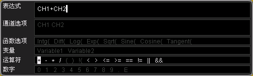

:CALCulate:ADVanced:EXPRession
命令格式
:CALCulate:ADVanced:EXPRession <str>
:CALCulate:ADVanced:EXPRession?
功能描述
设置高级运算的表达式。
参数
|
名称 |
类型 | 范围 |
默认值 |
|
<str> |
ASCII字符串 |
参考“说明”。 |
CH1+CH2 |
说明
请使用下图所示的字符输入合法的表达式。注意，表达式的长度最好不要超过64字节。

返回格式
查询以字符串形式返回当前的表达式。
举例
下面的命令设置表达式为“CH1+CH2&&CH3||CH4”。
:CALCulate:ADVanced:EXPRession
CH1+CH2&&CH3||CH4
下面的查询返回“CH1+CH2&&CH3||CH4”。
:CALCulate:ADVanced:EXPRession?